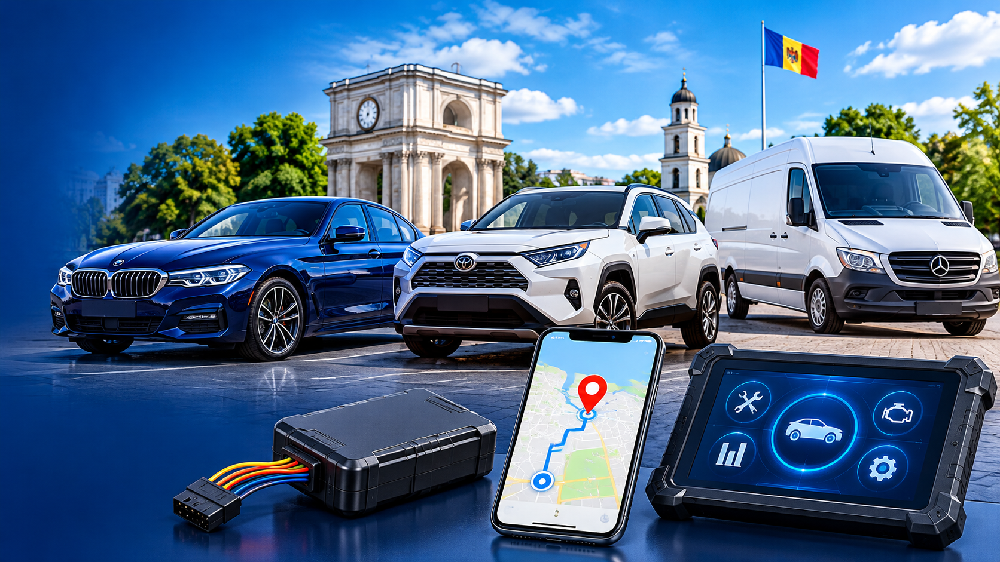

GPS-мониторинг
Продажа и установка GPS-трекеров, контроль маршрутов, геозоны и отчёты.
GPS-мониторинг, установка трекеров, компьютерная диагностика и профессиональная автоэлектрика.

Продажа и установка GPS-трекеров, контроль маршрутов, геозоны и отчёты.
Проверка электронных систем автомобиля, чтение и анализ ошибок.
Поиск неисправностей, ремонт проводки и автомобильной электроники.
Ремонт, программирование ключей и работа с иммобилайзерами.
Установка и обслуживание сигнализаций и систем дистанционного запуска.
Дополнительная защита автомобиля и дистанционное управление блокировкой.
Советы, обзоры оборудования и полезная информация для водителей.
Загружаем статьи…
Фотографии работ появятся здесь.
Свяжитесь удобным способом. Работаем в Кишинёве и по всей Молдове.
076 829 080